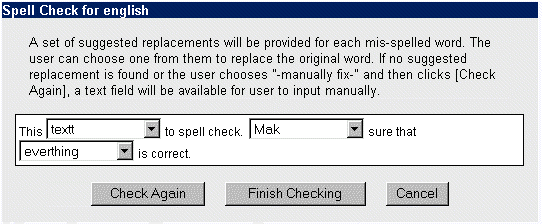

Open Webmail 使用指南
>>
拼写检查
你在本文框里要撰写邮件。一旦你已经完成你的邮件了，你可能想要确认有没有拼写错误。不管怎样，经常这样做，是很令人厌烦的。很幸运地，Open Webmail内建了相当不错的拼写检查功能。只要选择你想要使用的字典（English，or American），然后点击“拼写检查”。这样就会开启新的窗口执行拼写检查。
如果邮件正文是这样:
This textt to spell check. Mak sure that everthing iscorrect.
你可能会得到和下列相似的拼写检查结果:

在邮件中拼错的字就是在选单中的字。要校对这个字，点选你想要修复的字。不但建议的字会出现，也可以直接用手写入修复。如果在表单中所列的建议字中，有你想要的单字，你可以直接选择该字，而如果你想要的字没有出现在表单中的话，你可选择--手动修复-- 。一旦完成了，点选“完成拼字检查”。窗口将会关闭，而且，字也会被自动地改变成正确的字了。如果你刚才选择---手动修复---，那么点选“再检查一次”，然后你就能够在已经拼错字的地方打入正确的字。
|